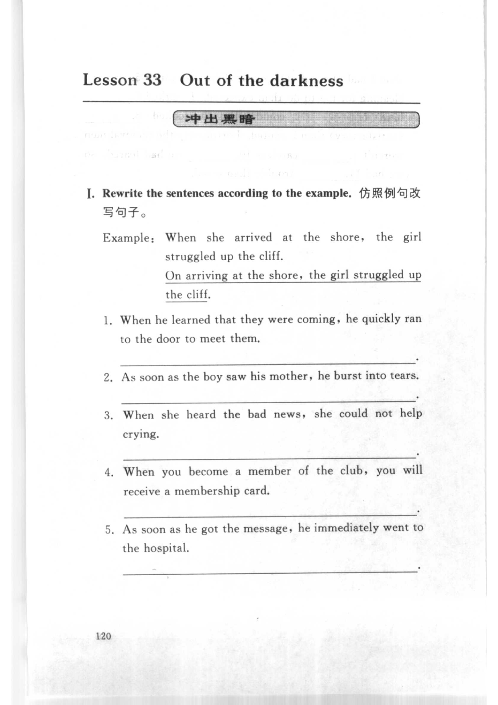
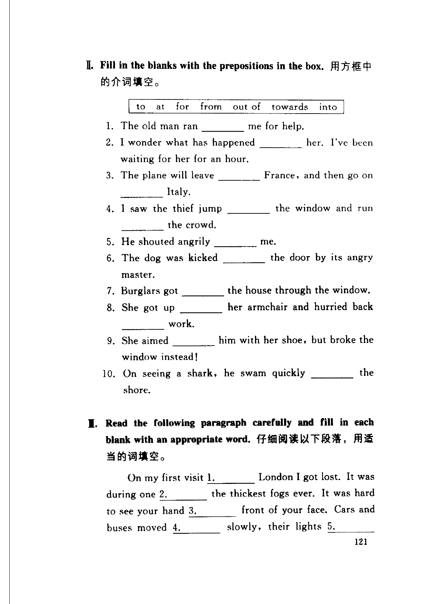
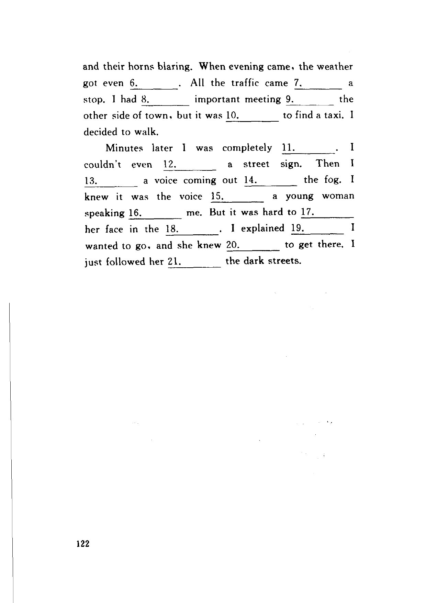

Grammar exercises · 语法练习
I. Rewrite the sentences according to the example.
仿照例句改写句子。
Example: When she arrived at the shore, the girl struggled up the cliff.
On arriving at the shore, the girl struggled up the cliff.
-
I. Rewrite — When he learned that they were coming, he quickly ran to the door to meet them.
-
I. Rewrite — As soon as the boy saw his mother, he burst into tears.
-
I. Rewrite — When she heard the bad news, she could not help crying.
-
I. Rewrite — When you become a member of the club, you will receive a membership card.
-
I. Rewrite — As soon as he got the message, he immediately went to the hospital.
II. Fill in the blanks with the prepositions in the box.
用方框中的介词填空。
to at for from out of towards into
-
II. Prepositions — The old man ran
1.me for help. -
II. Prepositions — I wonder what has happened
2.her. I've been waiting for her for an hour. -
II. Prepositions — The plane will leave
3.France, and then go on4.Italy. -
II. Prepositions — I saw the thief jump
5.the window and run6.the crowd. -
II. Prepositions — He shouted angrily
7.me. -
II. Prepositions — The dog was kicked
8.the door by its angry master. -
II. Prepositions — Burglars got
9.the house through the window. -
II. Prepositions — She got up
10.her armchair and hurried back11.work. -
II. Prepositions — She aimed
12.him with her shoe, but broke the window instead! -
II. Prepositions — On seeing a shark, he swam quickly
13.the shore.
III. Read the following paragraph carefully and fill in each blank with an appropriate word.
仔细阅读以下段落，用适当的词填空。
On my first visit 1. London I got lost. It was during one 2. the thickest fogs ever. It was hard to see your hand 3. front of your face. Cars and buses moved 4. slowly, their lights 5. and their horns blaring. When evening came, the weather got even 6.. All the traffic came 7. a stop. I had 8. important meeting 9. the other side of town, but it was 10. to find a taxi. I decided to walk.
Minutes later I was completely 11.. I couldn't even 12. a street sign. Then I 13. a voice coming out 14. the fog. I knew it was the voice 15. a young woman speaking 16. me. But it was hard to 17. her face in the 18.. I explained 19. I wanted to go, and she knew 20. to get there. I just followed her 21. the dark streets.
-
III. Passage — first visit
1.London -
III. Passage — one
2.the thickest fogs -
III. Passage — hand
3.front of your face -
III. Passage — moved
4.slowly -
III. Passage — their lights
5. -
III. Passage — got even
6. -
III. Passage — came
7.a stop -
III. Passage — had
8.important meeting -
III. Passage — meeting
9.the other side -
III. Passage — it was
10.to find a taxi -
III. Passage — completely
11. -
III. Passage — even
12.a street sign -
III. Passage — I
13.a voice -
III. Passage — coming out
14.the fog -
III. Passage — voice
15.a young woman -
III. Passage — speaking
16.me -
III. Passage — hard to
17.her face -
III. Passage — in the
18. -
III. Passage — I explained
19. -
III. Passage — she knew
20.to get there -
III. Passage — followed her
21.the dark streets
Original images · 原图对照
Expand a page to compare it with the transcription. Open the original in a new tab to zoom in.
展开原图核对文字，也可以在新标签页打开原图放大查看。
Book page 120 · Exercise I (rewrite, items 1–5)
Open original · 打开原图 ↗ Download original · 下载原图


Book page 121 · Exercise II (prepositions) and start of Exercise III (passage)
Open original · 打开原图 ↗ Download original · 下载原图


Book page 122 · Exercise III (passage, continued)
Open original · 打开原图 ↗ Download original · 下载原图


Your notes and answers
Use this space for longer responses or exercises that do not have an individual answer box.